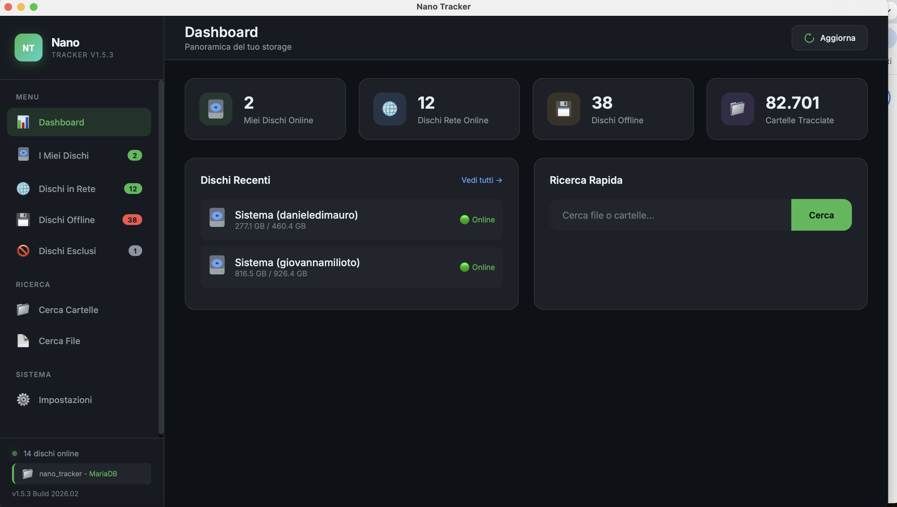
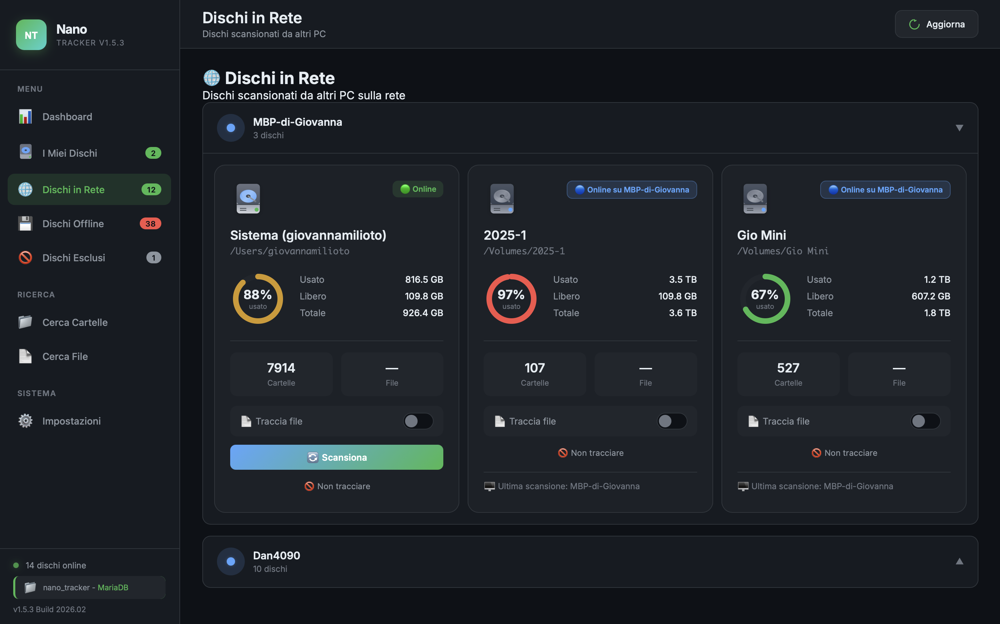

Nano Tracker cataloga i tuoi hard disk e ti dice esattamente dove si trova la cartella del tuo cliente. Niente più panico da "dove l'ho salvato?".
Senza carta di credito. Scarichi, installi e cerchi.

Conosci la sensazione. Ti chiedono di recuperare la cartella del lavoro "Panettone Antonini" fatto tre mesi fa. Hai 15 hard disk impilati sulla scrivania. Inizi a collegarli e scollegarli uno a uno, aspettando che il sistema operativo li legga, sprecando ore preziose. Non deve per forza andare così.
Fotografi, videomaker e studi: abbiamo risolto il vostro problema numero uno.
Nano Tracker non intasa il database tracciando milioni di file singoli inutili (a meno che tu non lo voglia). Traccia di default le cartelle. Cerchi il nome del cliente o dell'evento e hai il risultato in un lampo.
Il disco è in un cassetto? Nessun problema. Interroga il database e Nano Tracker ti dirà il nome esatto dell'hard disk e in quale percorso si trova il tuo lavoro, ancora prima di collegarlo.
Lavori in team? Punta tutti i PC dello studio allo stesso MariaDB. Se oggi scarichi un lavoro sul PC di Giovanna, domani Josy lo troverà con una ricerca dal suo Mac. Tutto sincronizzato.

L'interfaccia ti mostra chiaramente non solo i tuoi dischi offline, ma anche quelli attualmente connessi ad altri computer sulla tua rete locale. Un unico "cervello" per tutto lo storage del tuo studio.
Scegli la licenza più adatta al tuo flusso di lavoro.
Testa il software con i tuoi dischi.
Perfetto per freelance e nomadi digitali.
Per team che condividono risorse.
Scarichi e installi Nano Tracker. Hai 15 giorni per provare tutte le funzionalità con database locale. Non serve carta di credito. Alla scadenza puoi acquistare una licenza per continuare a usarlo.
Sì. La licenza Solo vale per 1 computer (Mac o Windows). La licenza Studio vale per 5 computer, anche misti Mac e Windows.
Puoi disattivare la licenza dal vecchio PC direttamente dalle Impostazioni dell'app e riattivarla sul nuovo. Nessun contatto con il supporto necessario.
Solo usa un database locale sul tuo PC. Studio sblocca il database condiviso MariaDB: tutti i PC dello studio vedono gli stessi dischi e possono cercare i file degli altri. Perfetto per team di 2-5 persone.
Carte di credito/debito (Visa, Mastercard, Amex), PayPal, Apple Pay e Google Pay. I pagamenti sono gestiti da Lemon Squeezy in modo sicuro.
Hai bisogno di aiuto? Siamo qui per te.
Per domande su licenze, configurazione e problemi tecnici.
support@nanotracker.app